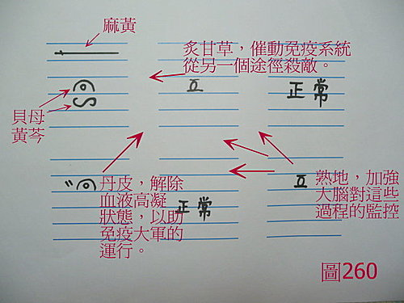

基礎概論 79：中醫用藥和西醫用藥的基本差異點在哪裡？破解棄醫存藥的迷思。
作者：陳建元
近代數十年來，主張棄醫存藥式的現代科學用藥法的大有人在，而這些人大都有西醫背景，而且都是位居高位為領導火車頭來帶領中醫，君不見現代中醫校園中，鼓勵的都是這種用法，鼓勵學生向西醫看齊，鼓勵多學學西醫的藥物化驗來幫助中醫，試想，如果感冒是一種病毒，那我們把中藥都拿去化驗，篩檢出來這些確實有強力抗病毒的，然後給予病人，這樣不是很科學嗎？如果病人心肌梗塞，那我們把中藥都拿去化驗，篩檢出來這些確實有強力通血散瘀的，把這些藥物找出來，然後做成一種藥丸給病人，這樣不是中醫大進步，現代中醫科學化嗎？不是可以救中醫免於受到時代的淘汰嗎？所以這些原來是西醫，後來轉中醫的人，或是對西醫涉獵較深的人，或是這些僅讀醫學邊緣科系的生物系、生物化學系的，但實際上沒有實際中藥臨床經驗的人，無不這樣大力的鼓吹著。
試想，這些古代醫理脈理，其實是落伍的東西，古代用打火石，現代用打火機才是進步，現代天文學雖脫胎於古代的占星學，但不可能退回古代的占星學，現代的醫學雖脫胎於古代的巫術，但也不可能退回古代的巫術，中醫學跳脫不了這樣的歷史規則，所以中醫也要學西醫的模式，才不會被淘汰，第一件要做的事情，就是棄醫存藥，先用科學儀器的檢驗數據來代替古代的醫理脈理，以便做出明確的診斷，然後第二件事情就是用現代科學來化驗中藥的成分，找出中藥的功效是什麼？然後根據儀器的診斷結果，按照藥物的效能來使用中藥，這樣不是很科學嗎？以上這些話，說得冠冕堂皇，局外人的大眾或根本沒有實際經驗的學子，聽得搖頭晃腦，誰敢言其非？莫不拱手稱是，大讚高明。
事實並非如此，中西醫的用藥，是有其基本上的差異點的，並不能如此套用
但事實並非如此，中西醫的用藥，是有其基本上的差異點的，下面用案例來說明，讀者就會明白其中的道理在哪裡：譬如一個患者，主述是感冒，然後自覺喉嚨腫痛，有黃痰，有去看西醫，西醫說是感冒喉嚨細菌感染髮炎，〈圖260〉是他的脈圖。

試問：如果依照古脈證式的中醫，應該如何下藥？
答：
肺脈浮細緊，中下層滑緩 →→→ 浮細緊是風寒，該下麻黃，中下層滑緩是肺中有痰熱濕熱，該下黃芩、貝母。
脾脈虛 →→→ 炙甘草。
心脈滑中帶澀 →→→ 這是心經血熱，該下丹皮。
腎陰脈虛 →→→ 熟地。
所以全部的藥物是麻黃、黃芩、貝母、炙甘草、丹皮、熟地。
又試問：如果是要下西藥來治療的話，該怎麼下呢？
答：
其實重點是只要對著肺脈下抗生素就可以了（假設還沒有產生抗藥性的前題下），其他對著肺脈下的氣管擴張劑、化痰藥、止咳藥，都是輔助的而已。〈下抗生素後，你會發現肺脈向平脈的方向移動，而因為西藥比較〝利〞（傷氣傷陰的意思），所以用藥之後，6脈都會變的弱一些，另外，如果6脈都弱到一個程度之後，這時抗生素又會變成下不動了（氣陰傷，本虛不足以運藥的意思）。〉
或問：為什麼西藥這麼簡單，對著肺脈下抗生素即可，而中藥卻要這麼複雜，要對著6脈來下藥才行得通？
答：
這就是天然藥物和化學藥物的根本差異了，也是中醫用藥和西醫用藥上的基本差異點了，中藥是天然藥物，而天然藥物的優點就是幾乎不具抗藥性，然後是治療各種病理情況的藥物都有，缺點是火力不夠；而西藥的優點是火力夠強，缺點是容易產生抗藥性，而且治療很多病理情況的藥物，目前都缺乏（譬如抗病毒的藥物）。
也就是說，以上述的例子，喉嚨發炎細菌感染是重點，譬如說，要殺滅這隻喉部細菌的基本值要超過60分，才能夠殺滅的話，那基本上大部分西醫的抗生素，它是65～75分的，所以能很輕易的殺滅這隻喉部細菌，那你天然藥物呢？其實沒有那麼強的殺傷力，了不起都在40～50分左右而已，譬如上述的麻黃、黃芩，雖有抗病毒殺菌的功效，也是在這個數值而已，所以其實是沒有能力去殺滅這隻喉部細菌的，也正因為如此，古人才會發展出脈法系統出來，好，你要60分，我只有50分，我就按照6脈下藥，用〝多路徑擊破〞的方式，叫幫手出來圍毆。
麻黃、黃芩→→50分
我再下歸入脾脈的炙甘草→→如此可以加強免疫系統的吞噬力道，所以能再＋20分 ，至此，我已經有70分了，已超過基本值的60分了，所以以此例來看，其實只要下3味藥，就可以有效了【註：不要忘記了，殺滅病原不是只有直接對抗一條路徑而已，催動免疫系統來殺滅病原，又是一條路徑。】
因為心脈血熱血壅而滯，所以又下丹皮，解除血液的黏稠狀態，這將有助於免疫大軍在血行中的運送和移行，所以殺傷力又可＋10分，目前總分80分
因為腎陰太弱，所以又下熟地，這將有助於大腦透過神經，對於上述過程的監控和掌控，能讓這些過程更順利的進行，所以殺傷力又可＋10分，目前總分90分
如果再按照醫理，用上引經藥的概念，再加一味桔梗，讓藥物的靶位點，主要鎖在以喉部為主，這樣殺傷力又可＋10分，總分可達100分。
從上面的敘述中，你看出來中藥西藥在用法上的基本差異了嗎？西藥火力夠強，所以可走〝單路徑擊破〞路線，中藥力道不夠強，所以一定要走〝多路徑擊破〞路線，才能有強大的療效。
現在我們再回頭來看〝棄醫存藥〞這件事， 你就會發現這是一件自廢武功的蠢事！歷代諸家為什麼都非常的重視四診脈法醫理，卻不把重點放在〝中藥〞上面來強調，歷代醫家不是傻瓜啊！就是因為知道單味分散的藥物，力道很有限，唯有透過脈法醫理軟體系統，利用〝多路徑擊破〞的方式，這些藥物就能加成巨大的力道，而脈法醫理系統，是用來操控哪一個藥物要擺在哪邊的軟件，古人不是發明來玩的【註：不要小看古代技術，利用加成法，可以輕易的到達現代醫學所達不到的地方，譬如：疾病學 6： 過敏性鼻炎，以及疾病學 2：妥瑞氏症】
日常用品等器物，當然是科學進步，愈後面的愈好，但對於人體生理而言，千年來是幾乎沒有變化的，況且中醫這套6脈操縱加成技術，千年以來並不是沒有進步，而是歷代醫家，是一直持續不斷的修正和調整的，說它古，已經有兩千多年了，說它新，它也是最新的，從先秦兩漢調到唐宋元明清，到現在還在不斷修正，讓它更完美，所以有其厲害獨到之處。
很明顯的，棄醫存藥，用西醫概念和用藥法來硬套在中醫身上，就像上述例子，用西醫檢查，診斷是喉嚨發炎細菌感染，然後所以找抗菌力40～50分 左右的黃芩給患者，以為這樣就是科學化很聰明，其實這是以盲導盲，牽著中醫跳火坑的死胡同，自廢武功以自己的缺點去硬碰西藥的優點，最後只有被淘汰的份。為什麼會犯這樣的錯誤呢？一來不懂中醫，不知道中醫究竟是怎麼一回事，不知道中醫是靠〝多路徑擊破〞來取得療效的；二來不懂藥物，不知道天然藥物和化學藥物，先天的情況不同，所以背後發展出來的下藥理法會有不同，而脈法醫理，其實只是為藥物所設的操縱軟件而已；三來不懂科學，不知道殺滅病原或修復組織，其實都不是一條路經而已，還有免疫系統和其他各種路徑。
熟悉中藥是靠什麼立足點來治病的，會看透很多迷思和虛假之事
上述已經把中藥是靠什麼立足點來治病的，講得很清楚了，藉由這些，您也能看透很多迷思和虛假之事，譬如：有的人說只要拿著經方按圖索驥，就能獲得高療效？有的人說民間方便套方，可以獲得高療效？有的人大力鼓吹，只要回歸四大經典，就可以救中醫？有的人在校園鼓吹，棄醫存藥，多學西醫救中醫？有的人大力鼓吹，中醫是超乎現實的〝道〞，要悟道就會醫術高超，這些有可能嗎？
其實，現實就是擺在那邊，天然藥物的缺點，就是力道不夠強，古人找到的古脈證系統方式，就是透過脈法醫理來加成，今天你只要對脈法醫理不熟，根本無法操控6部脈該擺進什麼藥物？無法操控，就無法加成，試問中醫的高療效何來？所以說如果熟悉中藥是靠什麼立足點來治病的話，將會看透很多迷思和虛假之事。
中醫最重要的根，是在醫，不是在藥，是在四診脈法醫理的上面，不是在〝中藥〞的上面
世界各地都有當地的草藥學，但為什麼都無法像中醫一樣發展起來，質言之，就是沒有發展出這些草藥的背後整合操縱軟件（即脈法醫理這些東西），所以整個兵力是散開的，是沒有體系的，純憑〝秘方〞的方式，當然不是全然無效（有些病原20分就能殺滅，但畢竟只是少數），所以僅靠這些殺傷力通常只在40～50分的天然藥物，沒辦法像中藥一樣，再透過一個〝脈法醫理〞系統之後，把這些原本40～50分療效的東西，加分到80～90分，因而超過60分的基本值而獲得療效，所以用這種〝秘方式〞的治療方法，其治療的疾病或病種範圍，必然非常的狹小和有限，這也就是世界各地的草藥學，不容易像中藥學一樣興盛起來的原因。
中醫最重要的根，是在醫，不是在藥，是在四診脈法醫理的上面，不是在〝中藥〞的上面，只要會這個〝醫〞，會這個〝脈法醫理〞，世界各國的草藥，被中醫使用一段時間找出經驗之後，都可以歸化成〝中藥〞（譬如乳香、沒藥、血竭、石榴皮‥‥‥，這些原本都不是中土的東西）。
是在培養有能力替群眾治病的中醫師，還是在為藥廠的利益作嫁妝？
所以這就是一件很糟糕的事，棄醫存藥，其實早已推了數十年之久了，每年都編列了大量經費，結果連一個中醫用藥和西醫用藥的基本差異點在哪裡？天然藥物和化學藥物，用藥的基本差異點在哪裡都不知道！這不是很糟糕嗎？基本的東西都弄錯了，開口動手都是錯，〝單路徑擊破〞和〝多路徑擊破〞的路線不同，下藥的手法就會不同，所以中醫才會發展出與西醫看起來不相同的相配套理法策略，而自成一系統，這是有原因的，是為了遷就於天然藥物本身的使用特性所造成的，也是為了順利的操控這些藥物，所找出來的一套軟體規則，今天若誤認為中藥的立足點是〝單路徑擊破〞，誤用化學品的概念去看待中藥，就會天真的用西藥的概念去套中藥，廢掉6脈操控的加成實務本事，硬拿著40～50分的黃芩，硬要去學西藥抗生素概念來用藥，這就難免註定風蕭蕭兮易水寒，壯士一去兮不復還的悲慘命運了！
棄醫存藥已經推行很久了，直到目前，學院醫院裡，還是用這些中藥西醫檢測來評定成績，數十年後的結果呢？就是中醫從能治大病，萎縮成只能治小病，再萎縮成只能作保養美容，每下愈況，這就是起因於連天然藥物和化學藥物之間，用藥有什麼不同的基本特質都沒搞清楚，就開始拿著雞毛當令箭來亂套一通了。
現在棄醫存藥還是一大堆人在推，還是如火如荼的進行，一來是〝學位〞要從這邊拿，二來是對藥廠有利，上面說過了，西藥的缺點是治療很多病理情況的藥物，目前都缺乏（譬如抗病毒的藥物、增強免疫力的藥物，‥‥‥），這些40～50分的天然藥物，治不了病也吃不死人，剛好被中藥生技廠商看中，拿來製成生技產品，以養生保健之名義大行其道，而最倒楣的犧牲品，則是中醫師了，棄醫存藥學那些中藥生技在走的路線，根本無法治病，而古代中醫是如何治病？（見基礎概論 45：正統中醫歷代諸家的心法軌跡）又如何藉著醫理脈法來操控6部脈作加成、多環節擊破的實務技術，學校又不教，於是變成被放牛吃草，只能自求多福了，學校興辦中醫教育的目的，是在培養有能力替群眾治病的中醫師，還是在為藥廠的利益作嫁妝？
【引用請先來信告知徵求同意，若有涉及販售營利等商業行為，版權所有拷貝盜用必究。】
【藥王脈學講壇】http://blog.xuite.net/drjychen/twblog